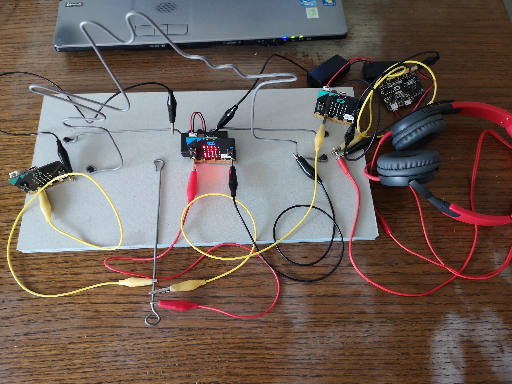
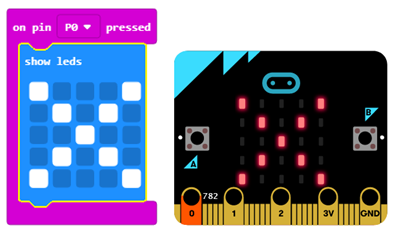
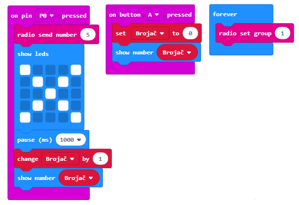
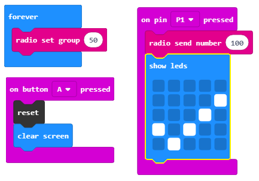

Projektni zadatak - Žica¶
Probleme sa motorikom (usporenom reakcijom ili nespretnošću za obavljanje neke aktivnosti) srećemo skoro svakodnevno. Dosta poslova sadašnjosti zahtevaju mirnu ruku. Tako na primer, arhitekte, zavarivači, zubari i hirurzi moraju da imaju „mirnu“ ruku kako bi njihov rad bio što uspešniji. Posebno je izražen problem sa motorikom kod ruke koja nije dominantna.
Istraživanja pokazuju da u svetu 96% ljudi koristi desnu ruku (desnoruko je). Kod većine ovih ljudi leva ruka je potpuno zanemarena i sa njom veoma malo preciznih radnji mogu da urade.
Jedan od načina da se ovaj problem prevaziđe jeste uređaj Žica uz pomoć koje osoba vežba svoju motoriku, tako što od uređaja dobija povratnu informaciju o uspešnosti izvršavanja zadatka. Pomoću ovog uređaja svako može da vežba koncentraciju i motoriku ruke. U zavisnosti od povratne informacije korisnik može da utvrdi da li je spretan ili ima problem sa motorikom pa mora više da vežba.
Za izradu uređaja Žica potrebno je:
4 Micro:bit
Krokodilke
Žice različitih dužina
Drvena podloga ili stirodur
Zvučnik ili slušalice
Štipaljka (kukica)
Za izradu Žice potrebno je najpre uraditi fizički uređaj koji se sastoji od žice na kojoj ćemo vežbati svoju motoriku, drvene (ili neke druge) podloge i Micro:bit-ova.
{kind=link}
Postupak povezivanja Micro:bit-ova
Sada kada smo se upoznali sa osnovnim komponentama i karakteristikama Micro:bit, možemo nastaviti dalje sa konstrukcijom uređaja Žica. Na konstrukciju sada treba da povežemo Micro:bit-ove korišćenjem krokodilki. Prvi Micro:bit povezujemo tako što uzemljenje (GND) povezujemo sa žicom pomoću krokodilki. Slika ispod pokazuje vezu između uzemljenja i Micro:bit (samo za jedan uređaj).

Pored toga potrebno je povezati Micro:bit sa delom uređaja kojim se proverava morotika (kukica). Sada kada smo napravili uređaj Žica potrebno je napraviti programe za svaki od Micro:bit.
{kind=link}
Programiranje
Potrebno je programirati zasebno sva četiri Micro:bit-a: 1. Jedan ima ulogu detektovanja i brojanja grešaka koje korisnik napravi 2. Drugi se koristi da se preko njega pokrene vreme 3. Treći meri vreme 4. Četvrti se koristi za puštanje zvuka kada korisnik napravi grešku.
Korak 1
Idite na https://makecode.microbit.org/.
Korak 2
Kreirajte novi projekat.
Želimo sada da isprogramiramo detekciju greške, tačnije želimo da pomoću Micro:bit-a registrujemo kada kukica dodirne glavnu žicu.
Na osnovu napravljenog fizičkog uređaja Žica, možemo zaključiti da je pin P0 „okidač“ svih događaja.
Kako je pin P0 vezan pomoću krokodilki za kukicu dodirom glavne žice detektuje se greška i na Micro:bit-u treba da se pojavi krstić (programiramo detekciju greške).
Korak 3
Izaberi iz kategorije  blok
blok  i iz padajuće liste izaberite pin
i iz padajuće liste izaberite pin P0.
Ovaj blok će nam biti „okidač“ vizuelnog prikazivanja greške.
Korak 4
Sada je potrebno dodati blok za prikaz krstića na ekranu koji će se pojaviti kada korisnik pomoću kukice dotakne glavnu žicu.
Izaberite  i blok
i blok  .
.
Izgled koda i simulator greške:
U kodu ćemo dodati blok za pauzu kojim osiguravamo pravovremeno odazivanje sistema (uređaja Žica).
Izaberite kategoriju i blok  u kome postavljate vreme u milisekundama (1000 milisekundi = 1 sekunda).
u kome postavljate vreme u milisekundama (1000 milisekundi = 1 sekunda).
Izgled koda:

Korak 5
Gornji deo koda samo prikazuje detekciju greške koja nastaje kada kukica dotakne glavnu žicu.
Sada ćemo dodati deo kojim ćemo brojati koliko puta je korisnik napravio grešku. Da bi ovaj zahtev mogao da bude ispunjen, moramo da pronađemo način da čuvamo i po potrebi menjamo vrednost brojača grešaka koje korisnik pravi. Rešenje za ovaj problem jeste uvođenje promenljive.
Promenljivu možeš da shvatiš kao prostor u memoriji računara, sličan kutiji, u kome se, za vreme izvršavanja programa, čuvaju neke međuvrednosti. Promenljive imaju svoja imena. Kada u programu želiš da koristiš vrednost promenljive, dovoljno je da navedeš njeno ime.
Promenljivu kreiraš tako što, u kategoriji Variables (1), klikneš na dugme Make a variable (Napravi promenljivu) (2) i u polje uneseš ime promenljive (3), u našem slučaju Brojač. Klikom na dugme OK (4), kreirana je promenljiva (5).

Korak 6
Na početku „treninga“ vrednost brojača biće nula. Postavljanje početne vrednosti (resetovanje na početnu vrednost) ćemo definisati tako što korisnik pritisne taster (dugme) A. To znači da kada korisnik pritisne dugme A na Micro:bit-u vrednost brojača se postavlja na nulu, i moguće je započeti brojanje grešaka.
Izaberi iz kategorije blok  i iz padajuće liste birate dugme A.
i iz padajuće liste birate dugme A.
Ovaj blok će nam biti „okidač“ resetovanja promenljive Brojač.
Iz kategorije Variables prevlačimo blok  .
.
Ovaj blok spajamo sa gornjim blokom i blokom za prikaz vrednosti promenljive. (Iz kategorije biram blok  u kome iz kategorije
u kome iz kategorije Variables prevlačim blok na mesto broja 0.
Dobijamo blok kojim se prikazuje vrednost promenljive Brojač.
Izgled dela koda za resetovanje i prikaz promenljive Brojač:

Korak 7
Kreiranu promenljivu Brojač, čiju početnu vrednost smo postavili na nulu, sada treba da iskoristimo, na taj način što će se njena vrednost menjati (uvećavati za jedan) svaki put kada korisnik napravi grešku, tačnije kada kukica dotakne glavnu žicu.
Za to ćemo koristiti iz kategorije Variables blok .
Ovaj blok ćemo prevući u deo koda u kome smo detektovali grešku prikazom znaka x.
Izgled koda i izvršavanje koda na simulatoru:

Korak 8
U sledećem koraku želimo da unapredimo projekat tako što će se svaki put kada korisnik dotakne glavnu žicu čuti zvuk.
Za to je potrebno da napravimo vezu između dva Micro:bit-a, tačnije da iskoristimo mogućnost radio komunikacije između njih. Najpre je potrebno kreirati ID grupe koji se koristi za „kreiranje“ prostora u kome će u našem slučaju komunicirati dva Micro:bit-a. Za kreiranje ID grupe koristi se blok  iz kategorije
iz kategorije  . Može se uneti bilo koji broj. Mi ćemo ostaviti da je ID grupe 1. Ovaj blok postavljamo u okviru bloka iz kategorije .
. Može se uneti bilo koji broj. Mi ćemo ostaviti da je ID grupe 1. Ovaj blok postavljamo u okviru bloka iz kategorije .
Deo koda kojim se kreira grupa za komunikaciju:

Da bi se poslao radio signal drugom uređaju koji će na osnovu toga „odreagovati“ tako da se čuje zvuk nakon načinjene greške, potrebno je u deo koda za detektovanje i brojanje grešaka uvesti blok .
Dopunjeni kod za detektovanje i brojanje grešaka:

Ceo kod za prvi Micro:bit:
Klikom na dugme ili dugme  preuzmite .hex fajl na vaš računar. Prevlačenjem fajla na Micro:bit on je spreman za rad.
preuzmite .hex fajl na vaš računar. Prevlačenjem fajla na Micro:bit on je spreman za rad.
Korak 9
Sledeći korak je da se kreira program za drugi Micro:bit kojim će se kontrolisati zvuk svaki put kada korisnik napravi grešku. Naša dva Micro:bit-a treba da komuniciraju u prostoru sa ID grupom 1.
Postavljamo blok iz kategorije u okviru bloka iz kategorije .
Deo koda kojim se kreira grupa za komunikaciju:
Sledeći korak je da ovaj Micro:bit primi informaciju (u našem slučaju broj) na osnovu koje će da „odreaguje“ tako što će se čuti zvuk. Za to ćemo iz kategorije prevući blok:

U njega ćemo prevući blok  iz kategorije
iz kategorije  kojim se reprodukuje zvuk.
U datom bloku iz padajućih lista biramo ton i dužinu istog.
kojim se reprodukuje zvuk.
U datom bloku iz padajućih lista biramo ton i dužinu istog.

Izgled koda za reprodukciju zvuka:

Napomena: Da bi zvuk mogao da se reprodukuje Micro:bit mora da bude povezan sa zvučnicima ili slušalicama na sledeći način:

Ceo kod za Micro:bit kome se aktivira zvuk:

Na ovaj način smo kreirali detektovanje, brojanje i oglašavanje greške koju korisnik napravi kada dotakne glavnu žicu.
Korak 10
Da bismo kreirali uređaj koji će da meri vreme za koje korisnik završi „vežbanje“ svoje motorike potrebno je da uvedemo još dva Micro:bit-a od kojih će jedan da bude samo „okidač“ za pokretanje vremena na drugom Micro:bit-u.
Klikom na taster (dugme) A resetuje se uređaj i briše ekran. Opcija reset se nalazi u kategorijuju Advanced - Control .
Opcija brisanja ekrana nalazi se u podkategorijuju More kategorije .
Deo koda:

Zatim, kreiramo prostora za komunikaciju sa ID-om 50:
Pin P1 je pin za koji je putem krokodilke zakačena kukica.
Ovaj pin će se koristiti kao „pokretač“ vremena. Tačnije, dodirom kukice na žicu počinje da se šalje radio signal kojim se pokreće vreme. Ujedno da bi korisnik video da je vreme krenulo da se meri na ekranu Micro:bit-a se pojavljuje slika  .
.
Ceo kod za Micro:bit kojim se signalizira početak merenja vremena.
Korak 11
Potrebno je da definišemo dve promenljive:
promenljivu Vreme pomoću koje se meri vreme od početka „igre“. Igra počinje primanjem signala od predhodnog Micro:bit-a.
promenljiva Brojač koja ima dve moguće vrednosti true i false – dotaknuta je žica ili ne.
Klikom na taster (dugme) A resetuje se uređaj i postavljaju se početne vrednosti promenljivih Vreme i Brojač.
Vrednosti za promenljivu Brojač možemo naći u kategorijuju  :
:

Sledeći korak je kreiranje prostora za komuniciraju sa ID grupom 50:
Pin P1 je pin za koji je putem krokodilke zakačena kukica. Ovaj pin će se koristiti kao „pokretač“ vremena:

Kada korisnik klikne na dugme B prikazuje se vreme koje je bilo potrebno da korisnik završi „trening“:

Kada Micro:bit prihvati radio signal (broj) od drugog Micro:bit-a započinje postupak merenja vremena i promene vrednosti promenljive Vreme za 1, nakon svake sekunde sve dok se ne prekine „trening“:

Ceo kod za Micro:bit kojim se meri vreme od početka „igre“:

Kada se prebace svi kodovi na Micro:bit-ove možemo „testirati“ našu motoriku i trenirati slabiju ruku.